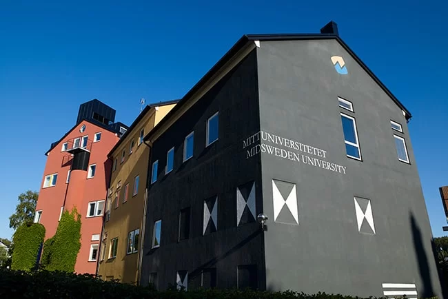

<div class="about section-container">
  <div class="max-width2 max-content-container">
    <div class="text-container">
      <span class="text4">Så Kan Ni Nå Oss</span>
      <h2 class="text5 Heading1">Kontakt</h2>
      <span class="text6">
        Vi är tre studenter från Mittuniversitetet som studerar
        Civilingenjörsprogrammet i Industriell Ekonomi. Under kursen
        Tillämpad Datateknik skapade vi Sveriges Trygghetskarta. Nedan
        finner ni kontaktuppgifter för oss, grundarna, samt för vår
        lärare som stöttade oss genom hela projektet.
      </span>
      <div class="checklist">
        <div class="check-item check-item2">
          <span class="text7"><strong>Grundarna till denna hemsida:</strong></span>
        </div>
        <div class="check-item">
          <span class="text7">
            Alexej Bäckman - 
            <a href="mailto:alba2203@student.miun.se">alba2203@student.miun.se</a>
          </span>
        </div>
        <div class="check-item">
          <span class="text7">
            Jonathan Sjödin - 
            <a href="mailto:josj2004@student.miun.se">josj2004@student.miun.se</a>
          </span>
        </div>
        <div class="check-item">
          <span class="text7">
            Shahd Shoukr - 
            <a href="mailto:shsh2102@student.miun.se">shsh2102@student.miun.se</a>
          </span>
        </div>
        <div class="check-item check-item2">
          <span class="text7"><strong>Mentor:</strong></span>
        </div>
        <div class="check-item">
          <span class="text7">
            Jan-Erik Jonsson - 
            <a href="mailto:jan-erik.jonsson@miun.se">jan-erik.jonsson@miun.se</a>
          </span>
        </div>
      </div>
    </div>
    <div class="image-container">
      
    </div>
  </div>
</div>
